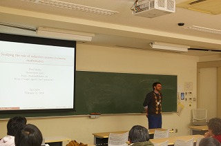
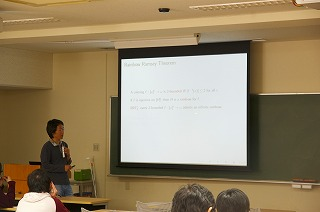
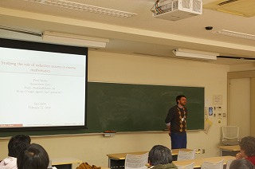
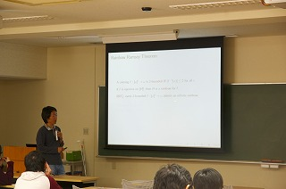

謝辞
S. G. Simpson先生、
P. Shafer先生、
Wei Wang先生、
Keng Meng Ng先生、
並びに、東京工業大学の鹿島亮先生及び鹿島研究室の皆様には多大なるご協力をいただきました。誠に有難うございました。
更新情報
- (03/03) スライドと謝辞を更新しました。
- (02/28) 勉強会の様子を公開しました。
- (02/20) アブストラクトを更新しました。
- (02/06) 懇親会情報を更新しました。
- (02/06) アブストラクトを更新しました。
- (01/28) 懇親会情報を更新しました。(参加希望の方は必ずご確認下さい)
- (01/28) 開催場所を更新しました。
- (01/24) サイトを公開しました。
日程・場所 (Date, Place)
2014年 2月 21日 (金)
東京工業大学 大岡山キャンパス 西9号館W933講義室 (地図)
勉強会の様子 (Photos)

 


 


講師 (Lecturers)
- Stephen G. Simpson (Pennsylvania State University)
- Paul Shafer (Ghent University)
- Wei Wang (Sun Yat-sen University)
- Keng Meng Ng (Nanyang Technological University)
プログラム・アブストラクト (Timetable, Abstracts)
| 10:00 - 11:00 | Stephen G. Simpson |
| 11:00 - 11:15 | 休憩 (集合写真撮影) |
| 11:15 - 12:15 | Paul Shafer |
| 12:15 - 13:45 | 昼食休憩 |
| 13:45 - 14:45 | Wei Wang |
| 14:45 - 15:00 | 休憩 |
| 15:00 - 16:00 | Keng Meng Ng |
| 16:00 - 16:30 | 休憩 |
| 16:30 - 18:00 | プロブレムセッション |
Stephen G. Simpson
- Title:
- Reverse mathematics and Hilbert's Program [slides]
- Abstract:
- I will make some remarks concerning reverse mathematics and its application to Hilbert's foundational program of finitistic reductionism. My thesis is that, in order for a piece of mathematics to be finitistically reducible, its proof-theoretic strength must be no greater than that of PRA (= Primitive Recursive Arithmetic). Reverse Mathematics has been very useful for determining which theorems are reducible to PRA in this sense. I will mention some old and new theorems of this kind.
Paul Shafer
Wei Wang
Keng Meng Ng
- Title:
- A survey on recent work involving arithmetical level equivalence relations [slides]
- Abstract:
- In this talk we will explore some recent results in the study of low-level equivalence relations on the natural numbers. A Sigma^0_n equivalence relation R is universal if for every Sigma^0_n equivalence relation S, S is reducible to R. we explore properties of the universal Sigma^0_1 equivalence relations. We also talk about the problem of finding complete equivalence relations at higher levels of the arithmetical hierarchy. Finally we introduce a reducibility between equivalence relations which we argue is sometimes more natural than the standard computable reducibility.
懇親会 (Dinner party)
会費:５３００円
場所：八吉 田町店 (site)
参加希望者多数の場合、早めに締め切らせて頂く場合があります。
リンク (Links)
- Computability Theory and Foundations of Mathematics 2014
- http://www.jaist.ac.jp/CTFM/CTFM2014/
- Sendai Logic School 2013
- http://sendailogic.math.tohoku.ac.jp/SLS/